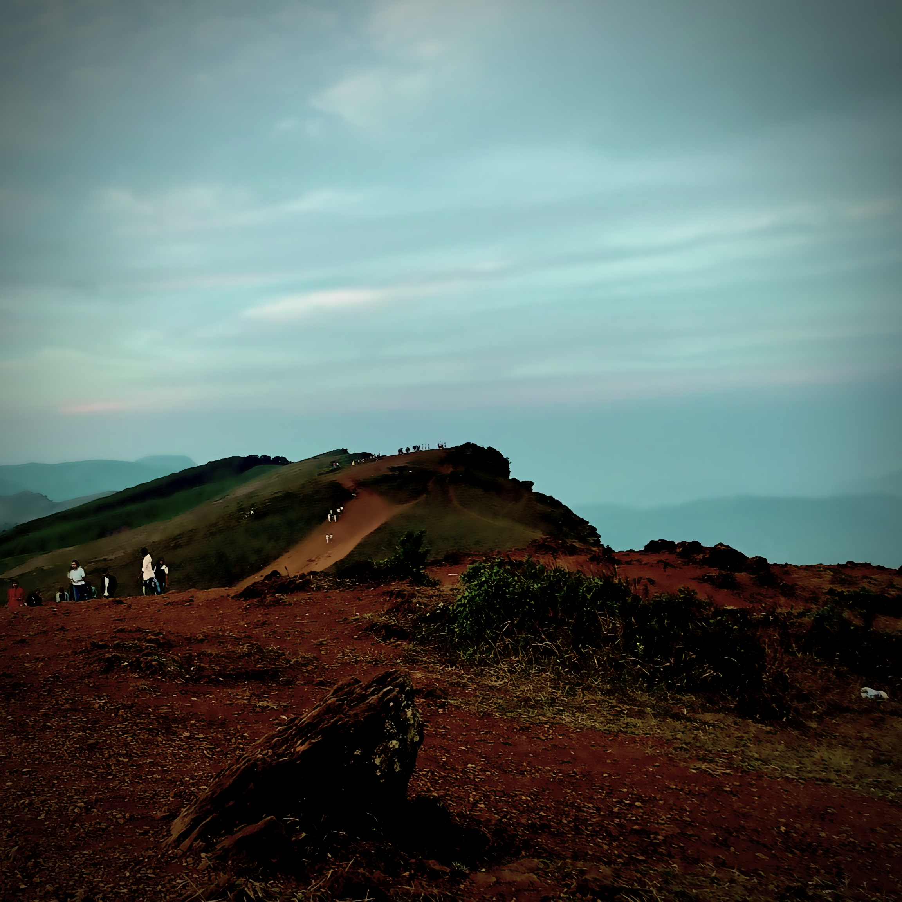

My Interests
On days where I retire from neural networks and terminal screens, you can strike a conversation with me on topics including but not limited to the ones below.
Geopolitics
Always keeping an eye out for big and small moves on the geopolitical chess board.


Astrophotgraphy
Always in search of shooting stars to make wishes.
Literature
“A reader lives a thousand lives before he dies . . . The man who never reads lives only one.”
-George R.R. Martin

Debator
Always passionate about bringing about a better argument through discussion.
Hiking
Willing to climb any peak for a better view
